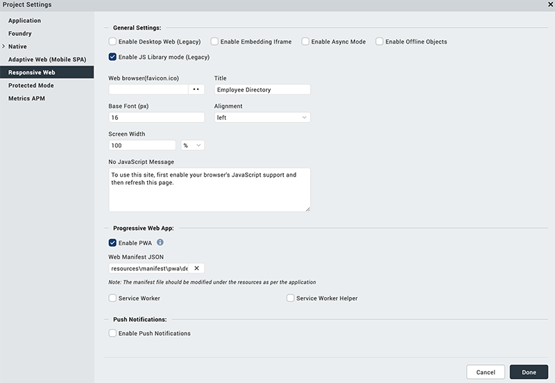

Design a Progressive Web App
Overview
A Progressive Web App (PWA) is the next step of a Responsive Web app. For example, if you have a website (web page/web app) that is mobile responsive, you can leverage the new features supported by modern web browsers to make it a Progressive Web App. These additional features include using service workers, web app manifests, push notifications, and offline support.
A Progressive Web App is an application that feels like a Native app, but is available over web browsers to a user. A user can access a Progressive Web App on any web browser on a mobile device. The app is responsive, functions even when the device is offline or has limited network speed, and does not require any updates.
For information about how to build a Progressive Web app, click here.
Important: Before you start to build a Progressive Web App, you must enable the PWA option for a Responsive Web application. When you do so and build the application, a new output is created in the Progressive Web App format. This new output does not replace any Responsive Web output, but instead a new output is created in the same folder. For more information about Responsive Web apps, click here.
This topic consists of the following sections:
- Guidelines to Optimize Progressive Web Applications
- Progressive Web Apps vs. Native Apps vs. Responsive Websites
- Progressive Web Apps - Videos
- Progressive Web Apps-Caching
- Progressive Web Apps - FAQs
A Progressive Web App is always up to date as it uses a Service Worker. A Service Worker is a script which ensures that the features that are not required to appear in the web browser or that don’t need any user interaction are linked with the web app. This service worker script runs in the background and helps in synchronizing the data in the background and in displaying push notifications.
When the Progressive Web App feature is enabled, on Volt MX Foundry, you must configure server assets caching as zero. Furthermore, you must not select the HttpSessioncaching option to fetch the latest content from the server. For more information, click here.
A Progressive Web App has the following features:
- Progressive: Site URLs work across all mobile web browsers.
- Responsive: All web pages are responsive on mobile and tablet devices.
- Secure: The web app is served over HTTPS.
- Offline: The app URLs load when they are offline.
- Easy Access: You can add a Progressive Web app to your home screen on your device.
- Fast: When you load the app for the first time on 3G, the app is fast.
- Unique Links: Each page in the Progressive Web application has a unique URL.
The Progressive Web App generated by Volt MX Iris meets 100% of Google’s PWA baseline checklist.
For a more hands-on approach on the Progressive Web Apps feature provided by Volt MX Iris AppPlatform, import and preview the Events, Employee Directory, and Resort Feature sample apps by using Volt MX Iris.
- Events app:

- Employee Directory app:
- Resort Feature app:
Progressive Web Apps vs. Native Apps vs. Responsive Websites
The following table illustrates the differences in the availability of various features between PWAs, Native apps, and Responsive websites.
| Functionality | Native App | Responsive Website | Progressive Web App |
|---|---|---|---|
| Functions Offline |  |
 |
|
| Push Notifications | |
|
|
| Installable on Home screen | |
|
|
| Full-screen experience | |
|
|
| Indexable by search engines | |
|
|
| One place to enter content | |
|
|
| Works across all devices | |
|
|
| No download required | |
|
|
| Does not require updates | |
|
|
Guidelines to Optimize Progressive Web Applications
Progressive Web Apps can be enabled on the Responsive Web channel on Iris. When you build Progressive Web Apps, you can use Google Lighthouse to improve the quality of your Progressive Web Apps. The higher the score on Google Lighthouse, the higher the quality of your Progressive Web App. You can achieve a better score on Google Lighthouse by taking care of a few things.
Important: To get an ideal evaluation with Google Lighthouse, build your app in the Release Mode and publish the app on your runtime environment.
Optimize Application Load or Startup
By optimizing your application startup or the load page, you can achieve a better score on Google Lighthouse.
- Ensure that the first screen of the app is lightweight and of the lowest size possible.
- Add a Splash screen for the application.
- Avoid placing any unwanted images on the first screen.
- Avoid placing service calls in the first screen of the App that are not required for its functionality
Optimize Web App Manifest
When you optimize your web app manifest file for the Progressive Web app, it can increase your quality score on Google Lighthouse. The optimizations define how your app anchor appears when a user adds your app to their home screen on their device.
- Ensure that you add images for your App to anchor the App on the home screen.
- For mobile devices, add to Home screen is displayed by the device browser if the manifest contains the App icons.
- For desktop browsers, use the beforeinstallprompt event for Google Chrome to display a notification to the users. You can find more information on beforeinstallprompt and similar functionality on other browsers at https://developers.google.com/web/fundamentals/app-install-banners/
- Add a background color in the Manifest file.
- Add a theme color in the Manifest file.
Service Workers
When Progressive Web is enabled, the application is not expected to specifically make any changes for the Service workers to be registered and enabled. The web framework within Iris inherently helps your application create and register a service worker. The service worker is created using the default caching mechanism.
Progressive Web Apps - Videos
This section contains a series of videos that explain how to create Progressive Web Apps using Volt MX Iris.
Video One
This is the first of the Progressive Web App tutorial series. Here, we walk you through the steps to build a basic web application by making use of Iris’s low-code capabilities.
Video Two
In this second tutorial of the PWA series, we walk you through the steps to enhance the web app created in our first video. We will add the search capability, better responsive layout, and improved aesthetics.
Video Three
In this third video tutorial of the PWA series, we will take the app that we built in our previous videos and add PWA capabilities.
Progressive Web Apps-Caching
Caching or offline storage is a method that an application uses to store assets or data in the internal memory of a device temporarily. In Progressive Web applications, this mechanism helps the user to access assets or data from a URL, even when the internet connection is slow.
From Iris V9 onwards, you can include custom caching categories in a Progressive Web application.
There are two ways to implement caching in a progressive web app using Volt MX Iris.
Note: In Volt MX Iris, you cannot use both the methods of caching together. You can either use the cachingMechanism function or provide your own service worker file.
cachingMechanism Function in Service Worker Helper File
A Service Worker Helper file extends the functionality of the default Service Worker of a Progressive Web application.
In this section, learn how to create a Service Worker Helper file and add it to an application.
cacheMechanism Function
A Service Worker Helper file defines the cacheMechanism function . Each time a URL is accessed in the application, the cacheMechanism function is invoked.
The cacheMechanism function contains the following details:
Syntax
cacheMechanism(url)
Input Parameters
url [String]- Mandatory
This parameter specifies the URL of the service used in the application.
Return Parameters
JSObject [object]
This object must contain only cachestrategy key.
cachestrategy key can have any of the following values.
| Constant | Description |
|---|---|
| constants.NONE | This is the default value of cachestrategy key. When the cachestrategy key is set to this constant, the data is not stored in the cache.The browser fetches the data each time the URL, specified in the url parameter, is used in the application. |
| constants.NETWORK_ONLY | When the cachestrategy key is set to this constant, the data is not stored in the cache. The browser fetches the data each time the URL, specified in url parameter, is used in the application. |
| constants.NETWORKFIRST_CACHELATER | When the cachestrategy key is set to this constant, each time the URL, specified in url parameter, is used in the application, the browser will check if there is a network connection. If a network connection has been established, the browser fetches the data from the server. If there is no network connection, the browser updates the application with the data in the cache. |
| constants.CACHEFIRST_NETWORKLATER | When the cachestrategy key is set to this constant, each time the URL, specified in url parameter, is used in the application, the browser will first check the cache for data. If the cache does not have the data corresponding to the URL, the browser will fetch the data from the server. |
Note: The HTTP request method of the URL specified in url parameter must be GET. If the URL uses the HTTP request method as POST, the cacheMechanism function is not invoked. If you want to implement caching or offline storage for a URL with POST method, you must use, voltmx.nosql APIs.
Here is an example of the cacheMechanism function in a Service Worker Helper file.
function cacheMechanism(url) {
var returnObj = {
'cachestrategy': constants.NONE
};
if (url.endsWith('.png') || url.endsWith('.css)) {
returnObj = {
'cachestrategy': constants.CACHEFIRST_NETWORKLATER
};
}
else if (url.indexOf('services') > 0) {
returnObj = {
'cachestrategy': constants.NETWORK_ONLY
};
} else if (any regex can be used) {
returnObj = {
'cachestrategy': constants.NETWORKFIRST_CACHELATER
};
}
return returnObj;
}Adding a Service Worker File to an Application
- Create a Service Worker Helper file. For information on how to create the file click here.
- Open the application to which you want to add the Service Worker Helper file in Volt MX Iris.
- From the left navigation bar, click Project Settings.
- In the Project Settings window, from the left menu, select Responsive Web.
- Under the Progressive Web App section, select the option Service Worker Helper.
Ensure Enable PWA is selected in the Progressive Web App section. -
Under the text Service Worker Helper file, provide the location of the Service Worker Helper JS file.

- Click Done.
- Build and publish the application in release mode to view the changes. For more information on how to build and publish your application in release mode, click here.
Custom Service Worker
Follow these steps to include the Service Worker in your application.
- Create a new JS file and name it as per your requirement (say serviceWorker.js). Add the following line as the first line of the script.
- From the left navigation bar, click Project Settings.
- In the Project Settings window, from the left menu, select Responsive Web.
- Under the Progressive Web App section, select the option Service Worker Helper. Ensure Enable PWA is selected in the Progressive Web App section.
- Under the text Service Worker file, provide the location of the Service Worker file. 
- Click Done.
- Build and publish the application in release mode to view the changes. For more information on how to build and publish your application in release mode, click here.
importScripts(‘./nocache/sw-ext.js’)
This script imports the sw-ext.js file into the service worker. sw-ext.js file has the configurations for push notification registration, some default values for cache, etc.
Note: When you incorporate your own Service Worker in your application, the default Service Worker file created by the platform is replaced with your file. You must provide the scripts for all the lifecycle events of the service worker. For more information about creating your Service Worker JS file, click here.
Progressive Web Apps - FAQs
- Is it possible to create Segment templates responsively? Can we use the Breakpoint Forking feature while creating Segment templates?
No, it is not possible to do so. Breakpoints are a concept of forms. Form layouts change based on the breakpoint that the page (form) width hits. Breakpoints are only provided at form-level. For Segments, you can use separate templates to achieve a unique layout for every breakpoint. - Can we create components with Breakpoint Forking?
Breakpoints are only provided at form-level. Components are designed to be cross-platform, and are not specific for a breakpoint. Because breakpoint is a form concept, you can fork a component for a specific breakpoint within a form, but not outside the form. And prior to run time, you can validate the designs on the form canvas. - Is it possible to create a Map Pin callout template responsively?
Similar to Segment templates, you can use separate templates if you want a unique layout for each breakpoint. -
If a Progressive Web App is installed on an Android device by using the Google Chrome app install banner, will Volt MX be able to send push notifications for that app?
Yes, Volt MX can send push notifications in such a scenario. However, you must ensure that the Google Chrome version is 73 or later. -
A Progressive Web App runs on the Android stock browser. Will Volt MX be able to send push notifications for that app?
Volt MX can send push notifications for that PWA, if the Android stock browser is compatible with PWA (works properly on Google Chrome). - If a Progressive Web App is installed on an Android device through the Google Play store, will Volt MX be able to send push notifications?
If the PWA is installed through the Google Play store, that app opens as a Google Chrome window. So, Volt MX can send push notifications in that case.